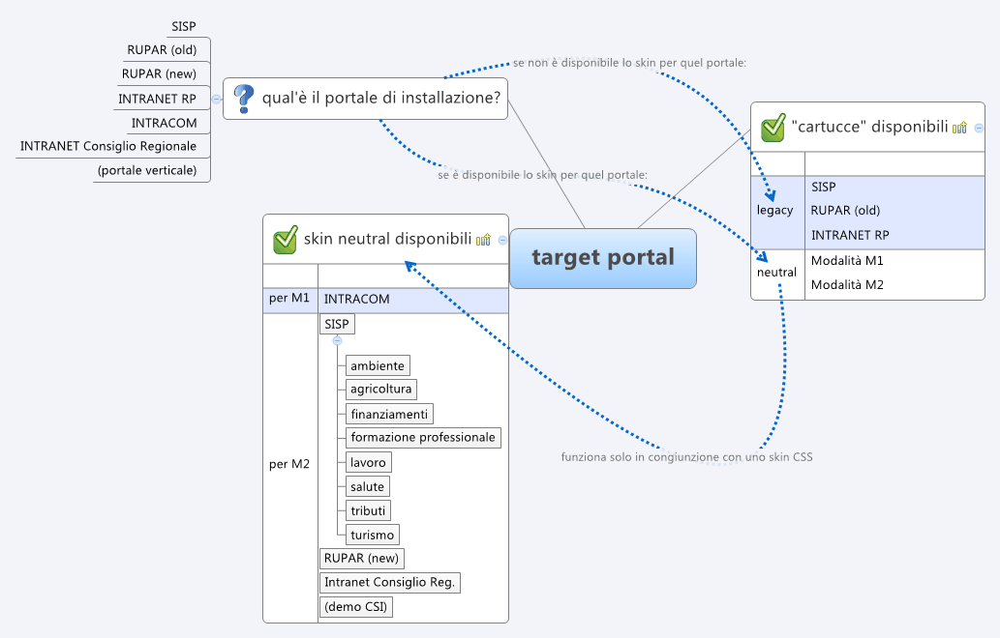

L'aspetto grafico delle applicazioni web generate con la cartuccia struts2Basic di guigen dipende da due fattori:
Nell' ambito della cartuccia di generazione struts2Basic esiste la possibilità di specificare il portale target, tramite un parametro (portalName) della cartuccia stessa. Questa possibilità deriva dalla necessità di adattare il codice html generato agli standard del particolare portale. Al momento sono previsti i seguenti portali target:
Per alcuni portali è le risorse statiche sono mantenute globalmente sul web-server e alcuni frammenti di pagina (header di portale, footer di portale, header di applicativo) devono essere reperiti dall'applicativo con il meccanismo della remote include, mediante il quale la componente installata sull'application server reperisce tali frammenti facendo una chiamata server-to-server verso il resource provider, ovvero lo stesso apache che fornisce le risorse statiche.
L'impostazione della modalità da utilizzare deve essere effettuata secondo quanto descritto nel manuale della cartuccia struts2Basic.
La linea strategica a tendere è quella di abbandonare gradualmente i target portal legacy in favore della modalità neutral stilizzata con gli skin che permettono di riprodurre il tema grafico dei vari portali.
La logica di scelta del portale target (e quindi l'impostazione dell' opportuno parametro portalName nella cartuccia di generazione) è mostrato in figura:
La modalità neutral prevede la generazione di codice xhtml cosiddetto "universale", ovvero codice sufficientemente generico da essere utilizzato con schermate di varia composizione e che può essere stilizzato agevolmente mediante stili css. Per poter realizzare uno skin CSS adatto alla stilizzazione di una pagina che si presenta con xhtml universale è necessario tenere presenti le specifiche dell'XHTML universale'. La documentazione relativa a tali specifiche è disponibile qui.
TODO